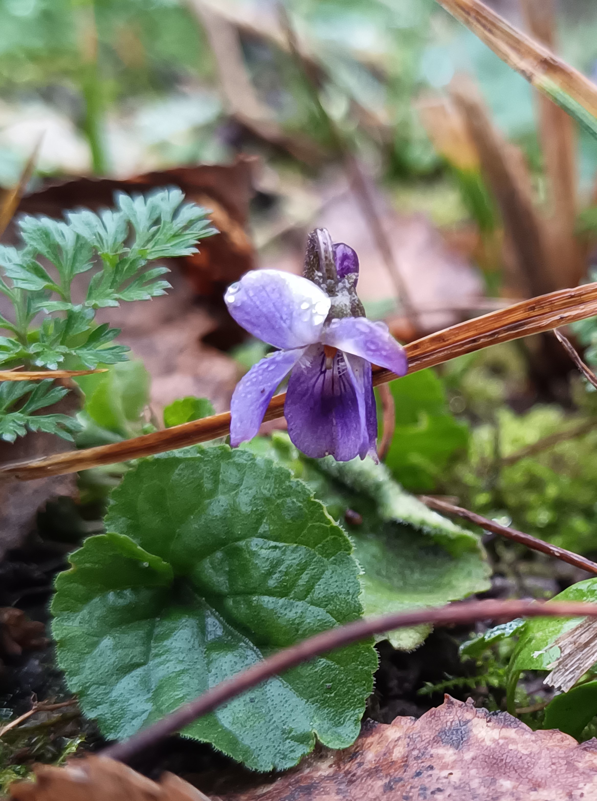
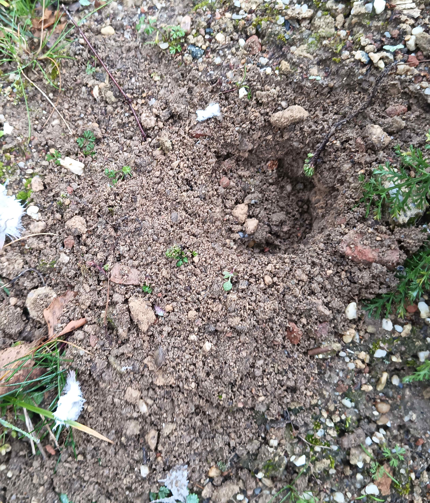
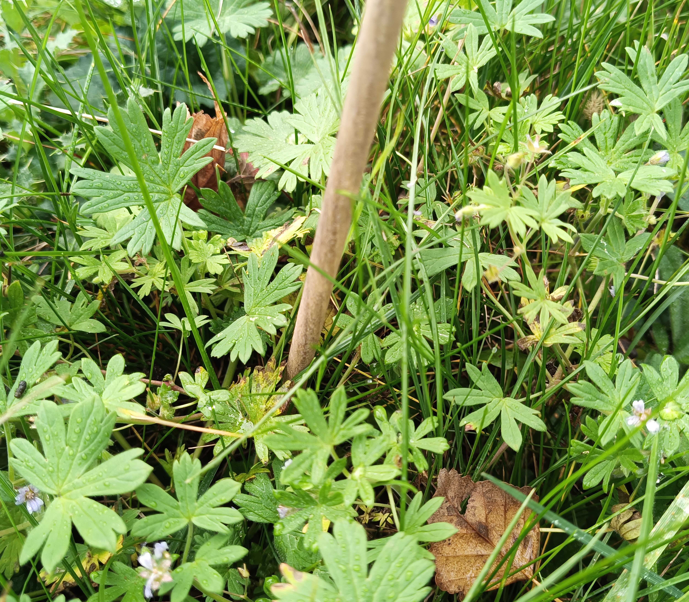
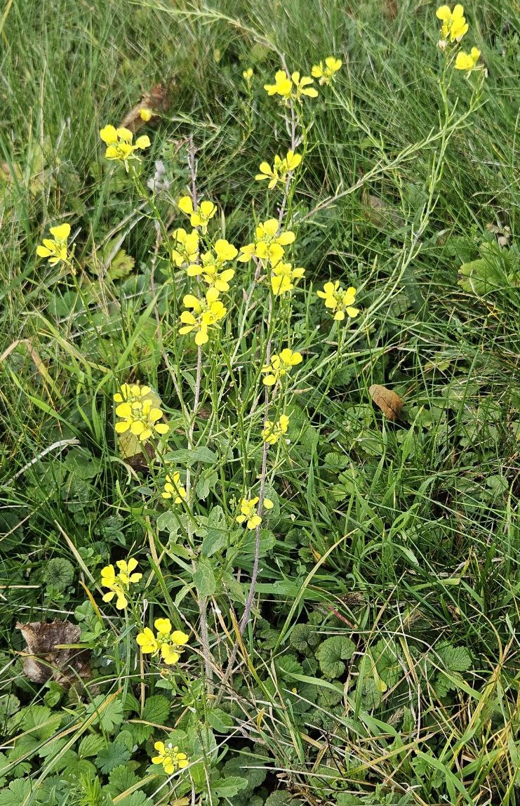
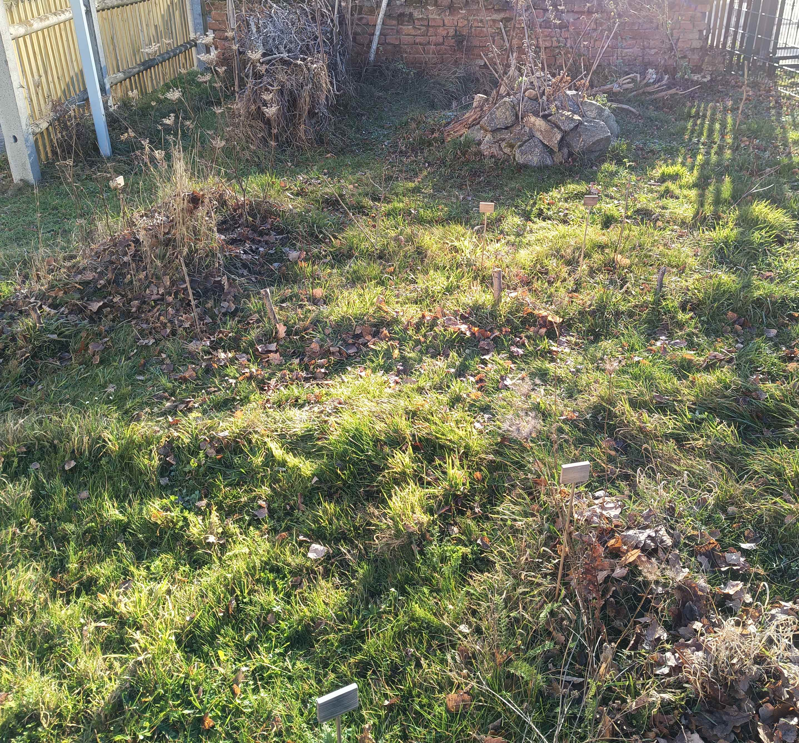

Gepflegte
Wildnis
Gepflegte
Wildnis
Fotoarchiv − Dezember & November 2024
Als letzte Blüten des Jahres waren beispielsweise noch diese beiden zu finden:
Ende Dezember nutzte ein März-Veilchen die Milde

Zur Zeit eines gerupften Vogels etwa beim Parkplatz Ende Dezember erschien ein Loch im Sandhügel mit Federn in der Nähe

Kleiner Storchschnabel (Geranium pusillum)

etwas markanter: Acker-Senf

Überblick von der 8 nach Süden: Die recht frischen Ansaatflächen habe ich möglichst laubfrei gehalten. Das Laub habe ich stattdessen auf die Winterbrachen-Bereiche als zusätzliche Isolierung geharkt.